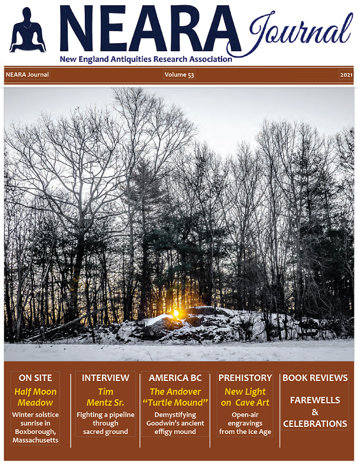
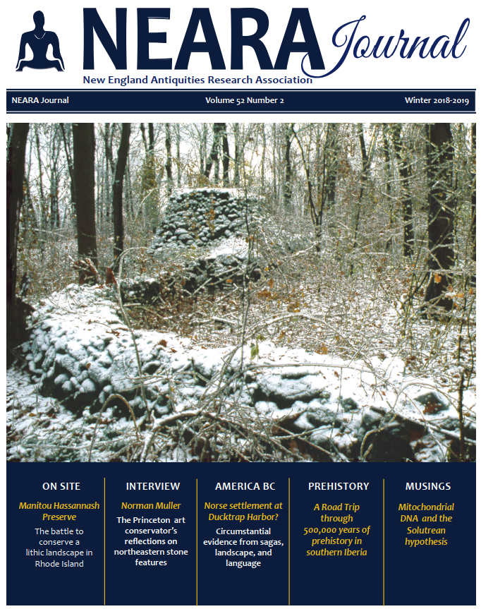
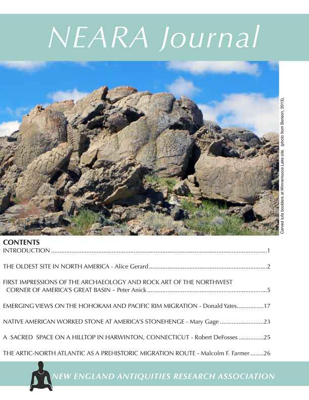
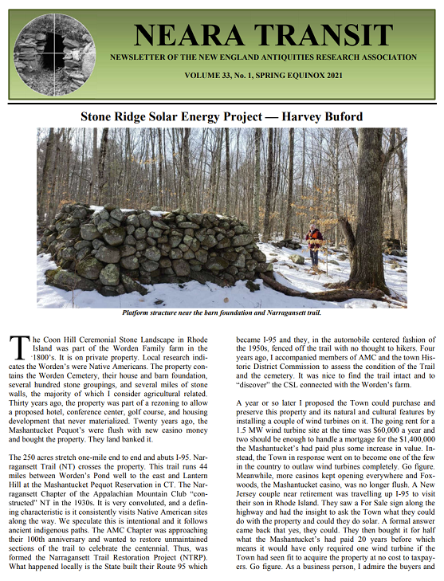
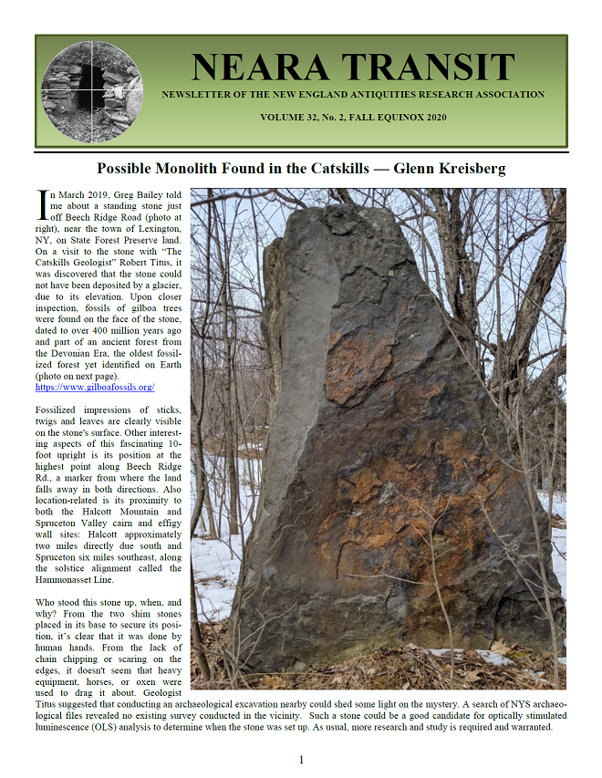
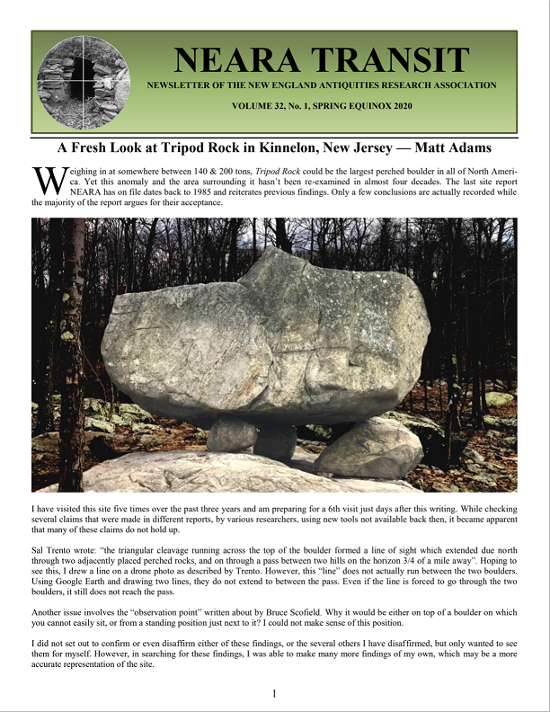

The current and previous NEARA Journal covers:



The current and previous NEARA Transit covers:



The Publications Committee is responsible for publishing the NEARA Journal and the Transit newsletter.
NEARA's newsletter is named the Transit. It is published near the spring and fall equinoxes and is sent electronically to all NEARA members. Some NEARA members may opt to receive Transit newsletters in printed form as well.
If you have some news that you would like distributed to NEARA's members and be recorded for future reference, send email to newsletter@neara.org. Tell us about sites that you have discovered, or about your efforts to preserve a site.
If you are a member of NEARA you can read all of the Transit newsletters that NEARA has ever published. Log into SiteDB.org and visit NEARA Transits.
To serve as a research organization, members’ findings must be documented. Hypotheses must not only recorded but also scrutinized, critiqued, and refined. Sharing this ongoing conversation has always been the primary motivation behind the NEARA Journal. It started life as a casual newsletter in 1966 and has since become a full-color printed record of many of NEARA and its members’ accomplishments.
If you have an idea for an article that you would like published, or for a site that you have spent time thoroughly investigating, or for someone you would like us to interview, send email to publications@neara.org.
If you are a member of NEARA you can read all of the NEARA Journals that NEARA has ever published. Log into SiteDB.org and visit NEARA Journals.
The NEARA Journal is published by the New England Antiquities Research Association, a non-profit organization dedicated to a better understanding of New England lithic features. Opinions expressed in the NEARA Journal are not necessarily those of its editors or staff, nor should they be construed as reflecting the official viewpoint of NEARA.
NEARA members share a number of interests beyond New England stonework. In addition to articles that document specific sites and propose interpretations, we welcome articles on topics which fall within this broader scope. Letters to the editors, book reviews, and critiques of prior articles are also encouraged. In order to promote stylistic consistency, we have developed a style sheet that authors must conform to. We reserve the right to reject articles or propose changes prior to publication.
Articles should be submitted to publications@neara.org. We recommend that unsolicited authors send us an extended abstract (one page) for review and feedback before sending a full article. Submissions should provide appropriate references and bibliographic information and include a short biography of the author. Original manuscripts must conform to our style guide (available on request) and should be submitted in electronic form as MS Word (doc or docx) documents. Photographs should be highest resolution digital files (preferably at 300 dpi or higher) and saved as a .jpg, .psd or .tif. Do not send PDF files. Limit email files to 5MB (breaking up an article into several mails if necessary). Illustrations should be high resolution files 300 dpi, referenced in the text, and must include attribution.
The editors reserve the right to make minor editorial changes to text and illustrations; major changes will be made in consultation with the author. Original copy will not be returned except on specific request.
{kind=link}
{kind=link}
{kind=link}
{kind=link}
{kind=link}
{kind=link}